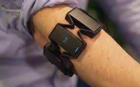

Wearable technology has now been around for a while and has become part of work and life thanks to things like Apple watches and the range of fitness devices. While those have been fun and helpful, a more interesting development in wearable technology and marketing is how you can use them to improve the customer experience. As a tech developer, it's important to see how what we do can further the overall company effort to win customers and retain them through exceptional experiences with our brand. Here are three ways your company can incorporate wearable technology to enhance the customer experience:

Over the decades, the line between human and computer has begun to blur. We have seen smartphones and tablets become more interactive through human touch. From this market has evolved wearable technology that collects environmental information (such as heartbeat, running speed, and geographical location) and presents it in a useful way through user applications. However, many such devices have to be pulled out of your pocket or handbag to purposely interact with them.